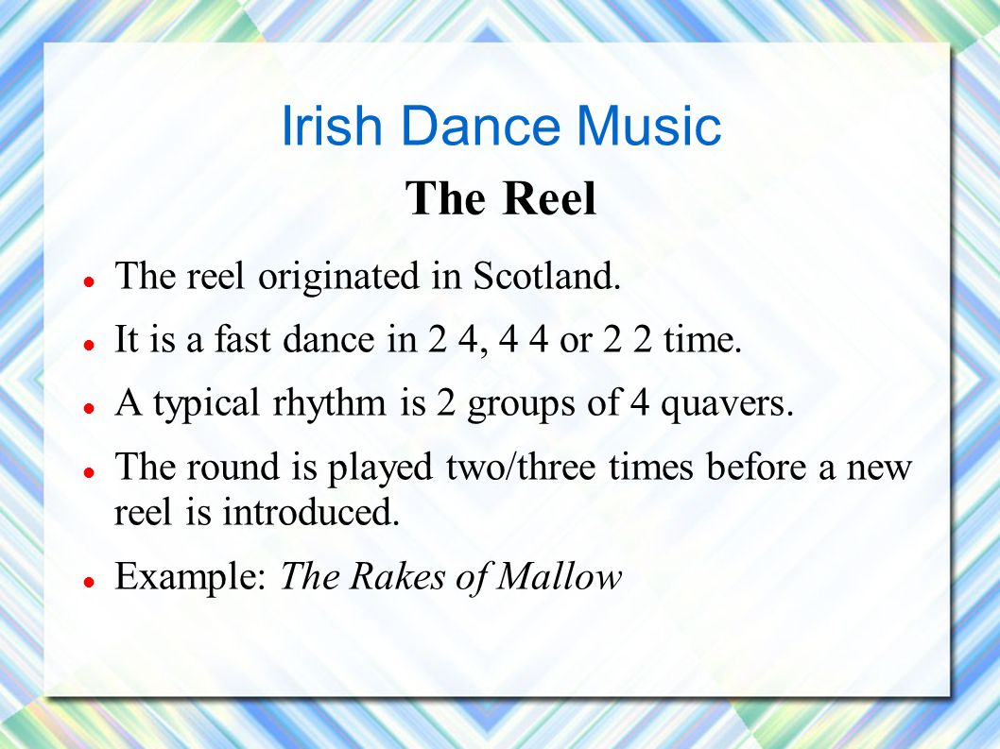
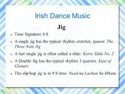
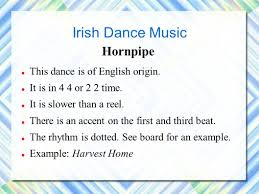

Irish dancing originated around 18th century in France. It was known as set dancing then and from that Ceili dancing developed in Ireland in the 19th century. Irish Dancing became really popular due to the commerical productions of Riverdance and Lord of the Dance. These were also promoted due to competitions such as Feis, Cheoil and Oireachtas.The three types of dance tunes that are the most popular is the Reel, Hornpipe and Jig.
The Reel is the most popular of the three dance types. It has a four-four time signature, meaning there is four full beats in every bar of music, and is the fastest of the three types. This type of music originated from scotland. The typically bar, if you would see it, would consist of eight qauvers.
There are three types of jigs that are considered important. The first one is known as a Single Jig, the second is known as Double Jig and the last is known as the Slip Jig. The Single and Double Jig have the same time signature, that is six eight time signature, meaning there is six half-beats in every bar, whereas the slide jig is a nine eight time signature. The jig itself is English orginality. An example of an group the performs are the Kesh Jig.
The Hornpipe is a slightly slower rhythm than the Reel, as it has a dotted rhythm to it. It is a dotted version of the Bar rhythm four four. An example of performer is The Boys of Bluehill.
